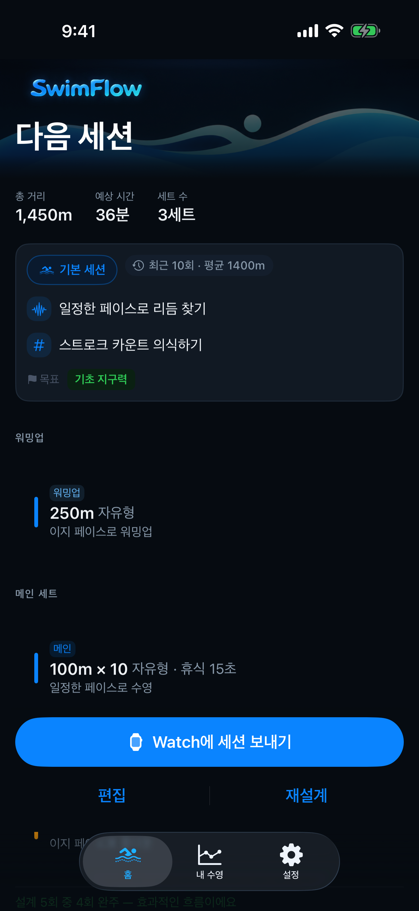
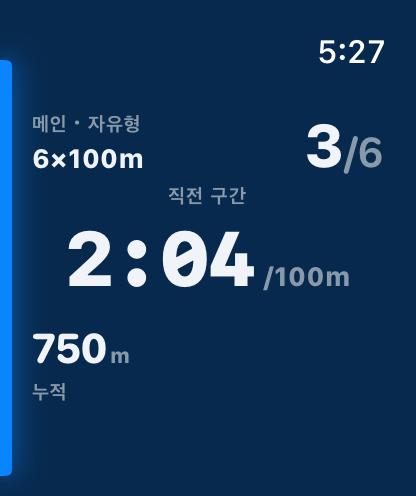
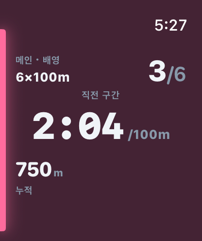
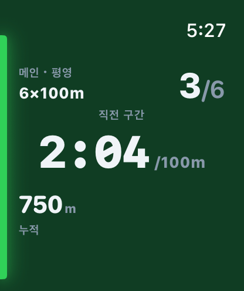
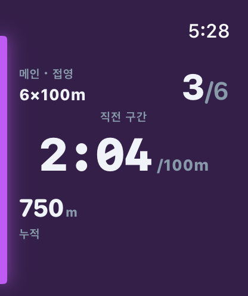
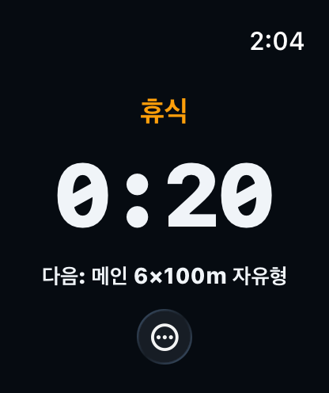
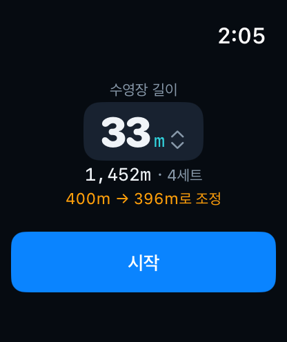
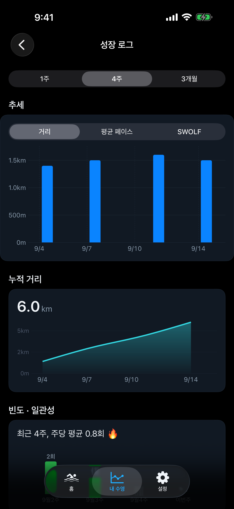

iPhone과 Apple Watch로 이어가는 나의 수영
지난 수영이 다음 수영을 만듭니다.
오늘의 계획을 손목에서 따라가고,
쌓인 기록으로 나의 변화를 확인하세요.
iPhone · Apple Watch / App Store 출시 준비 중

한 번으로 끝나지 않는 흐름.
01 · 수영을 준비하고
오늘 할 수영,
고민은 짧게.
나에게 맞는 수영을 추천받고,
오늘의 컨디션에 맞게 다듬으세요.
02 · 나의 수영에 집중하고
계획한 수영을,
손목에서 이어가세요.
영법과 페이스를 한눈에.
반복부터 휴식까지, 준비한 순서대로.




Apple Watch · 실제 앱 화면 · 예시 기록
다음 출발까지, 여유 있게.
휴식이 끝나면 진동으로
다음 출발을 알려드려요.

수영장이 달라도, 내 계획대로.
레인 길이에 맞춰 수영 거리를 조정하세요.


앱 화면의 수영 기록은 예시입니다. 분석 항목은 Apple 건강에 포함된 데이터에 따라 달라집니다.
영법은 어떻게 구분하나요?
세트의 영법을 이름과 색으로 함께 표시합니다.
- 자유형
- 배영
- 평영
- 접영
표시되는 정보를 바꿀 수 있나요?
크게 표시된 페이스는 방금 완료한 구간의 100m 환산 기록입니다. iPhone 설정 → 워치 화면에서 누적 거리 표시를 켜고 끌 수 있어요. 변경은 세션이 Watch에 수신된 뒤 다음 운동부터 적용됩니다.
아직 수영 기록이 없어도 시작할 수 있나요?
네. 수영 경력과 주로 하는 영법 등 처음 입력한 정보를 바탕으로 추천받을 수 있어요. 건강 기록은 나중에 연결해도 됩니다.
수영 기록이 보이지 않아요.
먼저 iPhone의 건강 앱에 수영 기록이 있는지 확인하세요. 건강 앱 → 요약 → 프로필 → 개인정보 보호의 앱 → SwimFlow에서 읽기 권한을 확인한 뒤, SwimFlow의 설정 → 도움 및 피드백 → 기록 다시 불러오기를 실행해 주세요. Watch에서 저장한 기록은 iPhone의 건강 앱에 반영되기까지 시간이 걸릴 수 있습니다.
Watch가 응답 대기 중이라고 나와요.
Watch 응답 대기는 연결이 끊겼다는 뜻만은 아닙니다. 페어링된 Watch에 SwimFlow가 설치되어 있는지 확인하고 Watch 앱을 열어 주세요. iPhone에서 보낸 세션이 Watch에 표시되는지 확인한 뒤 시작하세요.
앱을 삭제하면 기록도 사라지나요?
앱에 저장한 프로필·세션 구성은 삭제될 수 있으므로 문제 해결을 위해 먼저 앱을 삭제하지 마세요. Apple 건강에 저장된 운동은 별도로 남아 있으며, 읽기 권한을 허용하면 다시 불러올 수 있습니다. SwimFlow는 자체 계정 백업이나 기기 간 클라우드 동기화를 제공하지 않습니다.
데이터가 외부로 전송되나요?
수영 분석과 세션 설계는 기기에서 이루어집니다. iPhone은 건강 기록을 읽고, Watch는 직접 측정한 운동을 Apple 건강에 저장합니다. iPhone에서 사용 통계 수집·이용과 국외 이전에 모두 동의한 경우에만 TelemetryDeck에 사용 이벤트, 앱·기기 정보와 해시 처리된 식별자가 전송됩니다. 운동 수치는 전송하지 않으며, Watch는 사용 통계를 수집하지 않습니다. 자세한 항목과 문의 방법은 개인정보처리방침에서 확인할 수 있습니다.
곧, 당신의 손목에서.
App Store 출시 준비 중 · iOS 18 이상 / watchOS 11 이상
Watch 운동에는 수영을 지원하는 Apple Watch와 페어링된 iPhone이 필요합니다.